首页 / 星海旅行_塔法T31区
塔法T31区
塔法T31区是星海旅行中塔法星系的常驻区域，共 12 座小岛。
各岛的主题与产出固定；下图中的黄色编号与下表「小岛一览」的编号一一对应。
目录
区域地图

固定产出
本区所有小岛共享下列固定产出：
| 类别 | 产出 |
|---|---|
| 收集类（开宝箱/解密） | 露芽、树胶、漂流星 |
| 树木 | 牛油果树、芒果树、龙血树、仙人掌 |
| 花卉 | 紫罗兰、雏菊、美人蕉、向日葵、马齿笕 |
| 果实 | 火龙果、仙人掌果、芒果、牛油果 |
小岛一览
| 编号 | 岛屿 | 说明 | 产出 |
|---|---|---|---|
| 1 | 1 港湾之屿 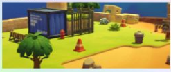 | 区域西北部，靠近初始登陆点。 | 牛油果树、紫罗兰、牛油果 |
| 2 | 2 火龙果乡之屿 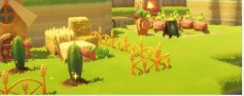 | 以火龙果为主要产出的岛屿。 | 牛油果树、芒果树、雏菊、向日葵、火龙果、龙舌兰丛 |
| 3 | 3 望洋之屿 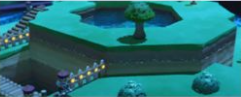 | 临海，可以望见远处的海面。 | 龙血树、马齿笕 |
| 4 | 4 矿谷之屿 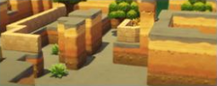 | 山谷地形，盛产矿石类资源。 | 芒果树、马齿笕 |
| 5 | 5 步梯向阳之屿 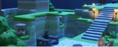 | 阶梯状的向阳坡地。 | 芒果树、牛油果树、紫罗兰、向日葵 |
| 6 | 6 夜市之屿 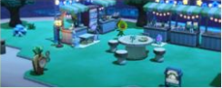 | 夜间氛围浓厚的岛屿。 | 牛油果树、美人蕉 |
| 7 | 7 陶罐之屿 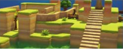 | 遍布陶罐的岛屿。 | 牛油果树、龙血树、马齿笕、向日葵 |
| 8 | 8 流瀑之屿 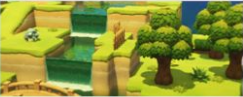 | 有瀑布流下的岛屿。 | 芒果树、美人蕉、向日葵 |
| 9 | 9 灰崖蓝洞之屿 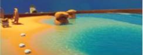 | 灰色崖壁与蓝色洞穴。 | 牛油果树、紫罗兰 |
| 10 | 10 栅栏小圈之屿 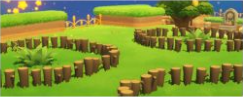 | 被栅栏围起的小圈地块。 | 芒果树、牛油果树、向日葵 |
| 11 | 11 仙人忘星之屿 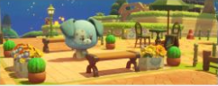 | 仙人掌密布的岛屿。 | 仙人掌、美人蕉 |
| 12 | 12 陶罐花池之屿 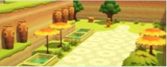 | 陶罐与花池组合的岛屿。 | 牛油果树、紫罗兰、美人蕉、马齿笕、向日葵 |
本页面内容由玩家自行整理编辑的资料站，游戏内容版本均为测试版本
本页为《星布谷地》玩家图鉴资料页，内容整理自玩家资料站与游戏内数据，仅供参考；游戏版本更新后数据可能滞后。
站点由 GitHub Pages 静态托管 · 与游戏官方及 B 站 WIKI 无隶属关系 · 游戏素材版权归原权方所有。